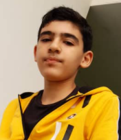

Qassim Yasseen

Summary
I am a web developer, indepndent and hardworking person as I classify myself. Alhamdulillah, a muslim and I fear no one but god!
Education
- Took Primary Studies in Malaysia
- Took local Secondary Studies certificate and IGCSE certificate
-
- Currently a medical student "surgent"
Skills
- Web developer with 3 years experience
- Fast learner compared to others "Alhamdulillah"
- Arabic Calligraphist
Work experience
Graphic designer - 3 stars rated
- This was when I was still learning it from 2019-2020
- Worked in a restaurant for 1 year "doing dishes, cooking, and other normal restaurant stuff"
Private teacher
- This occured in 2021-2024 - 4 stars rated
- Used to teach Arabic and Quran including Islamic stududies
Social Media
My work